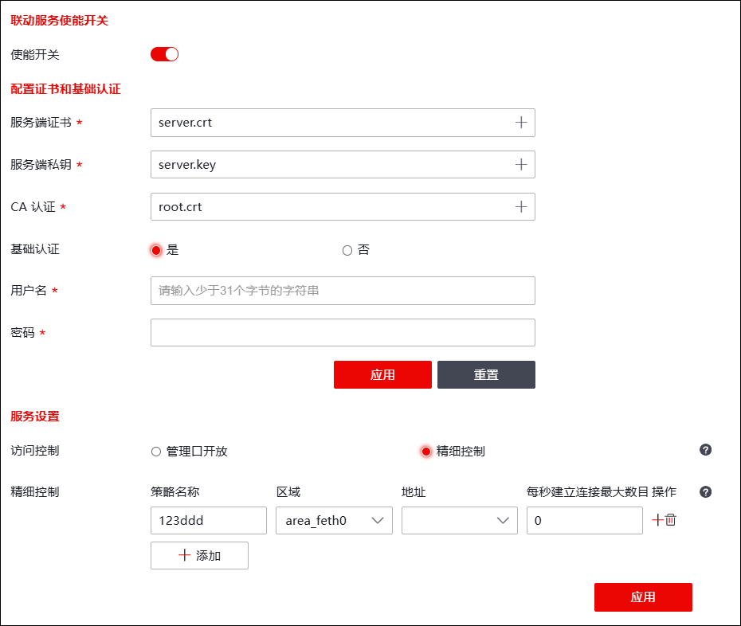

| 步骤1 | 选择 进入界面，点击“使能开关”按钮开启联动服务使能。 |
| 步骤2 | 配置证书和基础认证。 |

1）点击【+】按钮上传服务端证书、服务端私钥、CA证书（服务端证书/服务端私钥/CA证书为NGFW的证书/私钥/CA证书）。
2）设置是否启用基础认证。
|
²“基础认证”选项勾选“是”，需要设置用户名和密码参数，这两个参数可以是任何符合字符要求的字符串。需要注意的是，如果NGFW启用了“基础认证”，在配置第三方设备的联动认证“用户名”/“密码”参数时，该“用户名”和“密码”必须与NGFW中设置的完全一致，否则会导致第三方设备与NGFW联动失败。 |

3）配置完成后，点击【确定】按钮保存配置。
| 步骤3 | 服务设置。 |
各项参数的具体说明如下表所示。
参数 |
说明 |
|---|---|
访问控制 |
设置联动服务的访问控制规则。可选项：管理口开放、精细控制。 Ø管理口开放：对“MANAGE_AREA”区域开放联动服务。有关“MANAGE_AREA”区域的设置详见 区域。 Ø精细控制：仅对满足区域、地址和每秒建立连接最大数目条件的连接开放联动服务。 |
精细控制 |
“访问控制”参数选择“精细控制”，显示该参数。 点击【添加】可添加精细控制策略配置框。NGFW支持配置多条精细控制策略，配置的各条策略的关系为逻辑“或”。对于与NGFW联动的请求，仅有命中策略，才可与NGFW联动，否则将被拦截。 精细控制配置项包括：策略名称、区域、地址、每秒建立连接最大数目。 Ø策略名称：输入策略名称，用于区分不同策略。 Ø区域：可联动NGFW的设备所属区域。 Ø地址：可联动NGFW的设备的主机地址。 Ø每秒建立连接最大数目：指联动NGFW的连接建立速率限制。如果实际连接速率超过配置值，企图新建连接的报文将被拦截，并产生“告警”级别的日志，记录被拦截的报文。 说明： 区域MANAGE_AREA表示管理域，地址IPv4_ANY表示所有IPv4地址，地址IPv6_ANY表示所有IPv6地址，地址GROUP_ADDRESS_ANY表示所有IP地址。 |
当NGFW的联动服务参数配置完成后，然后在联动设备上配置相应的参数，即可使NGFW与联动设备成功联动。成功联动后，管理员可以在NGFW上进行联动模块的管理；联动模块支持单独开启，联动模块上报的事件信息支持删除、清空和模糊查询。